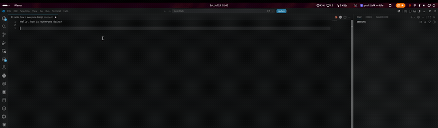
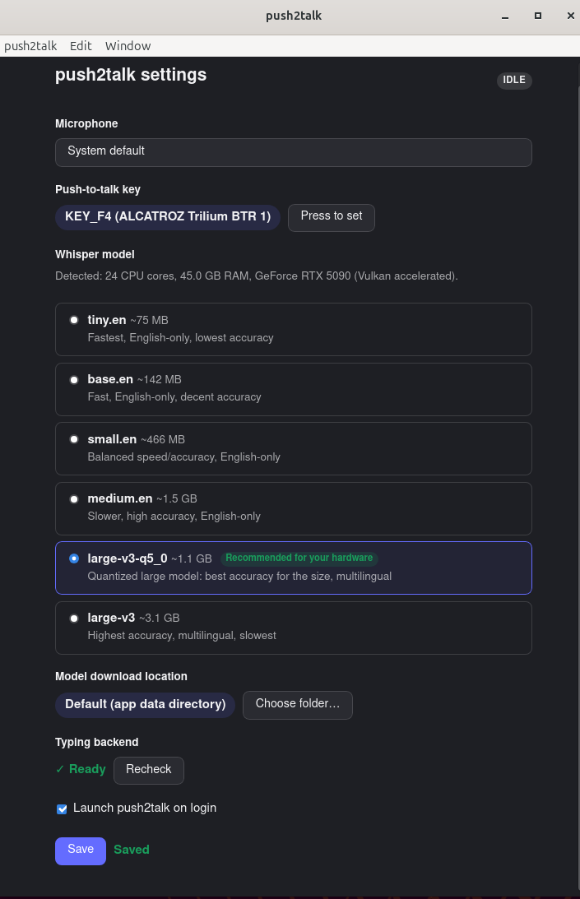
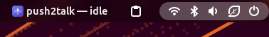

Local push-to-talk dictation, powered by Whisper. Free, open-source, and your voice never leaves your machine — not for a second.

No servers, no API keys, no account. Everything happens on your machine.
Pick any key in the setup wizard. Holding it starts recording from your chosen microphone.
Audio is captured locally and resampled for Whisper — nothing is sent anywhere.
whisper.cpp transcribes on-device, GPU-accelerated via Vulkan (Linux) or Metal (macOS).
The transcript is typed wherever your cursor already is — any app, any text field.
A GUI walks you through configuring push2talk on first launch — no config files to hand-edit.

It detects your CPU, RAM, and GPU, and recommends a Whisper model tier to match — no guessing which one will actually run well on your machine.
After setup it lives quietly in the tray:

Most dictation tools ship your voice to a server. This one doesn't, and it doesn't cost anything either.
| push2talk | Typical cloud dictation apps | |
|---|---|---|
| Price | Free | Subscription |
| Audio leaves your machine | Never | Yes, to a server |
| Works offline | Yes | Usually not |
| Open source | Yes | Usually not |
| Platforms | Linux, macOS | Varies |
Latest release: v0.2.0. See the full install guide for platform-specific setup (a couple of one-time permission/service steps on both Linux and macOS).
.deb, .rpm, or the portable AppImage
Unsigned build — see install guide for the Gatekeeper workaround